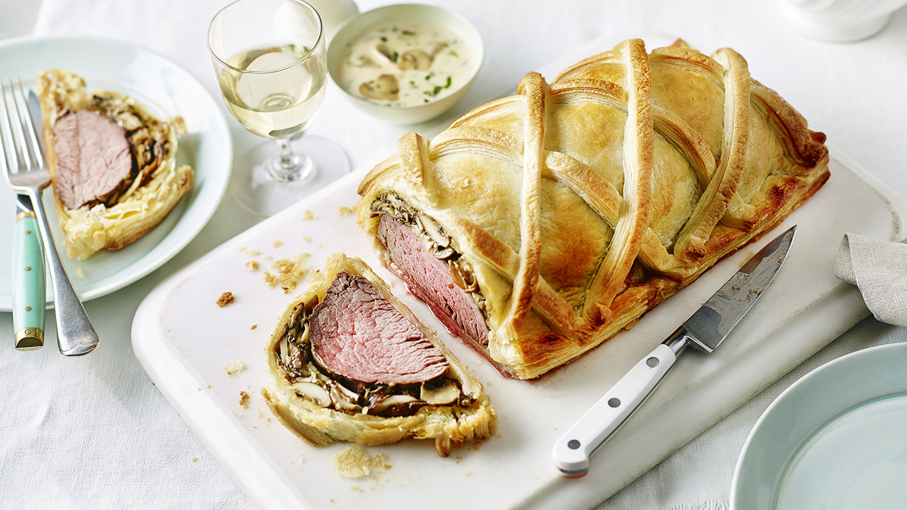
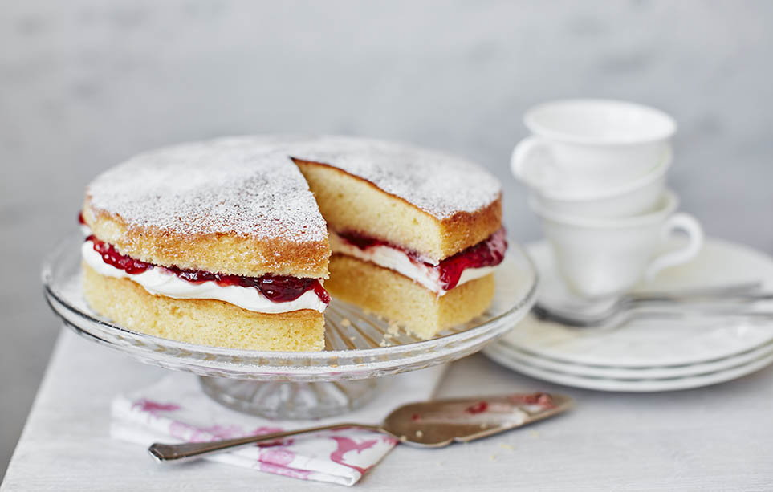

Shepherd’s Pie
Ingredients
MEAT FILLING:
- 2 tablespoons olive oil
- 1 cup chopped yellow onion
- 1 lb. 90% lean ground beef -or ground lamb
- 2 teaspoons dried parsley leaves
- 1 teaspoon dried rosemary leaves
- 1 teaspoon dried thyme leaves
- 1/2 teaspoon salt
- 1/2 teaspoon ground black pepper
- 1 tablespoon Worcestershire sauce
- 2 garlic cloves -minced
- 2 tablespoons all purpose flour
- 2 tablespoons tomato paste
- 1 cup beef broth
- 1 cup frozen mixed peas & carrots*
- 1/2 cup frozen corn kernels
POTATO TOPPING:
- 1 ½ - 2 lb. russet potatoes -about 2 large potatoes peeled and cut into 1 inch cubes
- 8 tablespoons unsalted butter -1 stick
- 1/3 cup half & half
- 1/2 teaspoon garlic powder
- 1/2 teaspoon salt
- 1/4 teaspoon ground black pepper
- 1/4 cup parmesan cheese
How to cook
- Add the oil to a large skillet and place it over medium-high heat for 2 minutes. Add the onions. Cook 5 minutes, stirring occasionally.
- Add the ground beef (or ground lamb) to the skillet and break it apart with a wooden spoon. Add the parsley, rosemary, thyme, salt, and and pepper. Stir well. Cook until the meat is browned, stirring occasionally.
- Add the Worcestershire sauce and garlic. Stir to combine. Add the flour and tomato paste.
- Stir until well incorporated and no clumps of tomato paste remain.
- Add the broth, frozen peas and carrots, and frozen corn. Bring the liquid to a boil then reduce to simmer. Simmer for 5 minutes, stirring occasionally.
- Set the meat mixture aside. Preheat oven to 400 degrees F.
- Place the potatoes in a large pot. Cover the potatoes with water. Bring the water to a boil. Reduce to a simmer. Cook until potatoes are fork tender, 10-15 minutes.
- Drain the potatoes in a colander. Return the potatoes to the hot pot. Let the potatoes rest in the hot pot for 1 minute to evaporate any remaining liquid.
- Add butter, half & half, garlic powder, salt, and pepper. Mash the potatoes and stir until all the ingredients are mixed together.
- Add the parmesan cheese to the potatoes. Stir until well combined.
- Pour the meat mixture into a 9x9 (or 7x11) inch baking dish. Spread it out into an even layer. Spoon the mashed potatoes on top of the meat. Carefully spread into an even layer.
- If the baking dish looks very full, place it on a rimmed baking sheet so that the filling doesn’t bubble over into your oven. Bake uncovered for 25-30 minutes. Cool for 15 minutes before serving.
Fish and Chips

Ingredients
For the Fish:
- 7 tablespoons (55 grams) all-purpose flour, divided
- 7 tablespoons (55 grams) cornstarch
- 1 teaspoon baking powder
- Sea salt, to taste
- 1 pinch freshly ground black pepper, to taste
- 1/3 cup dark beer, cold
- 1/3 cup sparkling water, cold
- 4 (7-ounce) fish fillets (thick, white fish)
For the Chips:
- 2 pounds potatoes, peeled
- 1 quart (1 liter) vegetable oil , or lard, for frying
How to Cook
- Set aside 2 tablespoons of flour. In a large, roomy bowl, mix the remaining flour with the cornstarch and baking powder. Season lightly with a tiny pinch of salt and pepper.
- Using a fork to whisk continuously, add the beer and the sparkling water to the flour mixture and continue mixing until you have a thick, smooth batter. Place the batter in the fridge to rest for 30 minutes to 1 hour.
- Meanwhile, cut the potatoes into a little less than 1/2-inch-thick slices, then slice these into 1/2-inch-wide chips. Place the chips into a colander and rinse under cold running water.
- Place the washed chips into a pan of cold water. Bring to a gentle boil and simmer for 3 to 4 minutes.
- Keep in the fridge covered with paper towels until needed.
- Meanwhile, lay the fish fillets on a paper towel and pat dry. Season lightly with a little sea salt.
- Heat the oil to 350 F in a deep-fat fryer or large, deep saucepan. Cook the chips a few handfuls at a time in the oil for about 2 minutes. Do not brown them.
- Place the 2 tablespoons of flour reserved from the batter mix into a shallow bowl. Toss each fish fillet in the flour and shake off any excess.
- Dip into the batter, coating the entire fillet.
- Check that the oil temperature is still 350 F. Carefully lower each fillet into the hot oil. Fry for approximately 8 minutes, or until the batter is crisp and golden, turning the fillets from time to time with a large slotted spoon.
- Once cooked, remove the fillets from the hot oil and drain on paper towels. Sprinkle with salt. Cover with greaseproof paper (parchment paper) and keep hot.
- Heat the oil to 400 F, then cook the chips until golden and crisp, or about 5 minutes. Remove from the oil and drain. Season with salt.
- Serve immediately with the hot fish.
Beef Wellington

Ingredients
- a good beef fillet (preferably Aberdeen Angus) of around 1kg/2lb 4oz
- 3 tbsp olive oil
- 250g/9oz chestnut mushroom, include some wild ones if you like
- 50g/2oz butter
- 1 large sprig fresh thyme
- 100ml/3.5 fl oz dry white wine
- 12 slices prosciutto
- 500g/1lb 2oz pack puff pastry, thawed if frozen
- a little flour, for dusting
- 2 egg yolks beaten with 1 tsp water
How to cook
- Heat oven to 220C/fan 200C/gas 7.
- Sit the 1kg beef fillet on a roasting tray, brush with 1 tbsp olive oil and season with pepper, then roast for 15 mins for medium-rare or 20 mins for medium. When the beef is cooked to your liking, remove from the oven to cool, then chill in the fridge for about 20 mins.
- While the beef is cooling, chop 250g chestnut (and wild, if you like) mushrooms as finely as possible so they have the texture of coarse breadcrumbs. You can use a food processor to do this, but make sure you pulse-chop the mushrooms so they don’t become a slurry.
- Heat 2 tbsp of the olive oil and 50g butter in a large pan and fry the mushrooms on a medium heat, with 1 large sprig fresh thyme, for about 10 mins stirring often, until you have a softened mixture.
- Season the mushroom mixture, pour over 100ml dry white wine and cook for about 10 mins until all the wine has been absorbed. The mixture should hold its shape when stirred.
- Remove the mushroom duxelle from the pan to cool and discard the thyme.
- Overlap two pieces of cling film over a large chopping board. Lay 12 slices prosciutto on the cling film, slightly overlapping, in a double row.
- Spread half the duxelles over the prosciutto, then sit the fillet on it and spread the remaining duxelles over.
- Use the cling film’s edges to draw the prosciutto around the fillet, then roll it into a sausage shape, twisting the ends of cling film to tighten it as you go.
- Chill the fillet while you roll out the pastry.
- Dust your work surface with a little flour. Roll out a third of the 500g pack of puff pastry to a 18 x 30cm strip and place on a non-stick baking sheet.
- Roll out the remainder of the 500g pack of puff pastry to about 28 x 36cm.
- Unravel the fillet from the cling film and sit it in the centre of the smaller strip of pastry.
- Beat the 2 egg yolks with 1 tsp water and brush the pastry’s edges, and the top and sides of the wrapped fillet.
- Using a rolling pin, carefully lift and drape the larger piece of pastry over the fillet, pressing well into the sides.
- Trim the joins to about a 4cm rim. Seal the rim with the edge of a fork or spoon handle.
- Glaze all over with more egg yolk and, using the back of a knife, mark the beef Wellington with long diagonal lines taking care not to cut into the pastry.
- Chill for at least 30 mins and up to 24 hrs. Heat oven to 200C/fan 180C/gas 6.
- Brush the Wellington with a little more egg yolk and cook until golden and crisp – 20-25 mins for medium-rare beef, 30 mins for medium. Allow to stand for 10 mins before serving in thick slices.
Roast chicken

Ingredients
- One 2- to 3-pound farm-raised chicken
- Kosher salt and freshly ground black pepper
- 2 tsp. minced thyme (optional)
- Unsalted butter
- Dijon mustard
How to Cook
- Heat oven to 220C/200C fan/gas 7. Put the chicken in a large roasting tin, then stuff the garlic and bay leaves into the cavity.
- Rub the outside of the chicken with butter, then squeeze over the lemon juice and add the lemon halves to the inside of the chicken.
- Season inside and out, then cook the chicken for 20 mins.
- Turn the oven down to 190C/170C fan/gas 5 and cook for a further 45 mins or until the chicken juices run clear when you pierce the thigh with a knife. Leave to rest for 15 mins before carving.
Bangers and mash
Ingredients
- 8 high quality pork sausages (pork is traditional but if you don't eat pork you can use chicken sausages, etc)
- Homemade British Bangers Recipe (highly recommended)
- 2 pounds Yukon Gold or other medium-starch potato , peeled and cut into large (2 inch) uniform chunks (or boiled whole in skins and peeled while hot)
- 1/2 teaspoon salt
- 4 tablespoons unsalted butter
- 3/4 to 1 cup hot milk (we recommend whole but you can use 2%)
- 1 batch BEST Homemade Onion Gravy
How to cook
- Preheat the oven to 400 degrees F.
- Make the onion gravy in advance. See our recipe for the BEST onion gravy.
- To Make the Mash: Place the potatoes in a pot of water and add the salt. Bring to a boil, lower the heat to a steady simmer and cook for about 15-20 minutes or until they potatoes are just tender when pierced with a knife. Be careful not to over-boil them.
- Thoroughly drain the potatoes and place them back in the empty pot set over very low heat just to maintain warmth. If using a ricer or food mill (this creates the most optimal texture), run the potatoes through it now while they're hot. If using a hand masher mash the potatoes while they're hot. (Avoid using an electric mixer or food processor. See blog post for explanation.) Mash the potatoes until fluffy and you've reached the desired degree of smoothness. Be careful not to over-mash or the potatoes will become gluey.
- Use a spoon to stir in the butter. Once melted stir in the hot milk gradually, allowing time for the potatoes to absorb the liquid after each addition. Add more hot milk as needed to achieve desired consistency. Season with salt and pepper to taste.
- To Prepare the Sausages: While the potatoes are boiling place the sausages in a baking dish with a little oil and roast the sausages for about 10 minutes on each side or until nicely browned. (Alternatively you can fry the sausages but baking them creates an especially nice crispy outer shell with a juicy interior.) For sausage-making enthusiasts we highly recommend our Homemade British Bangers.
- To serve, place a mound of mashed potatoes on each plate, lay the sausages on the mashed potatoes and top with onion gravy. Peas are a traditional side.
UK Traditional Desserts
Apple crumble
Ingredients
For the filling
- 575g Bramley apple (3 medium apples), peeled, cored and sliced to 1cm thick
- 2 tbsp golden caster sugar
For the crumble
- 175g plain flour
- 110g golden caster sugar
- 110g cold butter
For the topping (optional)
- 1 tbsp rolled oats
- 1 tbsp demerara sugar
- double cream, clotted cream or custard, to serve
How to make
- Heat the oven to 190C/170 fan/gas 5.
- Toss 575g peeled, cored and sliced Bramley apples with 2 tbsp golden caster sugar and put in a 23cm round baking dish at least 5cm deep, or a 20cm square dish. Flatten down with your hand to prevent too much crumble falling through.
- Put 175g plain flour and 110g golden caster sugar in a bowl with a good pinch of salt.
- Slice in 110g cold butter and rub it in with your fingertips until the mixture looks like moist breadcrumbs. Shake the bowl and any big bits will come to the surface – rub them in. Alternatively, pulse in a processor until sandy (don’t over-process).
- Pour the crumb mix over the apples to form a pile in the centre, then use a fork to even out.
- Gently press the surface with the back of the fork so the crumble holds together and goes crisp, then lightly drag the fork over the top for a decorative finish.
- Sprinkle 1 tbsp rolled oats and 1 tbsp demerara sugar over evenly, if you wish.
- Set on a baking tray and put in the preheated oven for 35-40 minutes, until the top is golden and the apples feel very soft when you insert a small, sharp knife. Leave to cool for 10 minutes before serving.
Victoria sponge cake

Ingredients
- 160g unsalted butter, softened
- 160g self-raising flour, sifted
- 160g caster sugar
- 3 large eggs, lightly beaten
- 1 tsp vanilla extract
- 100ml double cream
- 125g strawberry jam
- 1 tbsp icing sugar, for dusting
How to make
- Pre-heat the oven to gas 3, 170°C, fan 150°C. Grease and line 2 x 8 inch (20cm) springform cake tins with nonstick baking paper.
- In a large mixing bowl, cream together the butter, vanilla extract and sugar using an electric hand held whisk until light and fluffy. Add the lightly beaten egg a tablespoon at a time, beating well between additions, until fully incorporated. Carefully fold the flour in using a large metal spoon and spoon the batter evenly into the two prepared cake tins.
- Bake for 25-30 minutes until springy to the touch and a cake tester comes out clean when inserted into the centre of the cakes. Remove and allow the tins to cool on a wire rack for 5 minutes before turning out and peeling away the nonstick baking paper.
- Whip the cream to soft peaks as the cakes cool, then spread the bottom half of the cake with the cream in an even layer. Spread the strawberry jam evenly and carefully on top of the cream. Sandwich the cake with the other half of the cake and transfer it carefully to a serving plate. Dust with the icing sugar and serve.
Carrot cake

Ingredients
FOR CARROT CAKE
- 2 cups (260 grams) all-purpose flour
- 2 teaspoons baking soda
- 1/2 teaspoon fine sea salt
- 1 ½ teaspoons ground cinnamon
- 1 ¼ cups (295 ml) canola or other vegetable oil
- 1 cup (200 grams) granulated sugar
- 1 cup (190 grams) lightly packed brown sugar
- 1 teaspoon vanilla extract
- 4 large eggs, at room temperature
- 3 cups (300 grams) grated peeled carrots, 5 to 6 medium carrots
- 1 cup (100 grams) coarsely chopped pecans
- 1/2 cup (65 grams) raisins
FOR CREAMY FROSTING
- 8 ounces (225 grams) cream cheese, at room temperature
- 1 ¼ cups (140 grams) powdered sugar
- 1/3 cup (80 ml) heavy whipping cream
- 1/2 cup (50 grams) coarsely chopped pecans, for topping cake
How to make
MAKE THE BATTER
- Position a rack in the middle of the oven. Grease two 9-inch round cake pans, line the bottom with parchment paper and then grease the top. Or grease and flour the bottom and sides of both pans.
- Heat the oven to 350 degrees Fahrenheit (176C).
- Whisk flour, baking soda, salt, and cinnamon in a medium bowl until very well blended.
- In a separate bowl, whisk the oil, granulated sugar, brown sugar, and vanilla.
- Add the eggs, one at a time, whisking after each one.
- Switch to a large rubber spatula. Scrape the sides and bottom of the bowl, then add the dry ingredients in three parts, gently stirring until they disappear and the batter is smooth.
- Stir in the carrots, nuts, and raisins.
BAKE CAKE
- Divide the cake batter between the prepared cake pans.
- Bake until the tops of the cake layers are springy when touched and when a toothpick inserted into the center of the cake comes out clean, 35 to 45 minutes.
- Cool cakes in the pans for 15 minutes, then carefully turn the cake layers out onto cooling racks. Remove the parchment paper and cool completely. If you find that a cake layer is sticking to the bottom of the pan, leave the cake pan upside down and allow gravity to do its thing.
TO FINISH
- In a large bowl, beat the cream cheese with a handheld mixer on medium speed until creamy, about 1 minute.
- Beat in the powdered sugar, a 1/4 cup at a time, until fluffy.
- Pour in the whipping cream. Beat on medium speed for 2 to 3 minutes, or until the frosting is whipped and creamy. This frosting resembles the texture of whipped cream. Chill covered until ready to frost the cake.
- When the cake layers are completely cool, frost the top of one cake layer, and place the second cake layer on top.
- Add the remaining frosting to the top of the carrot cake and use a butter knife or small spatula to swirl the frosting around. Leave the sides of the cake unfrosted. Finish with a handful of nuts on top.